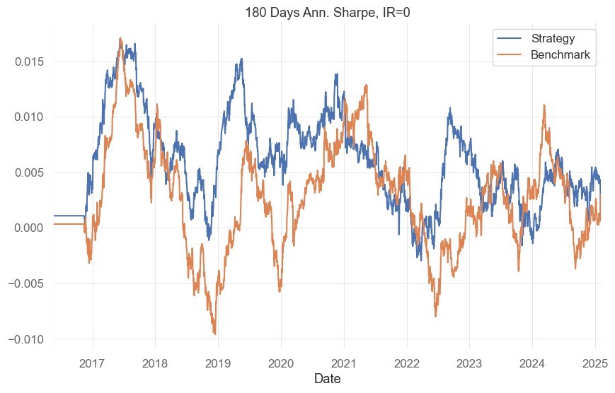
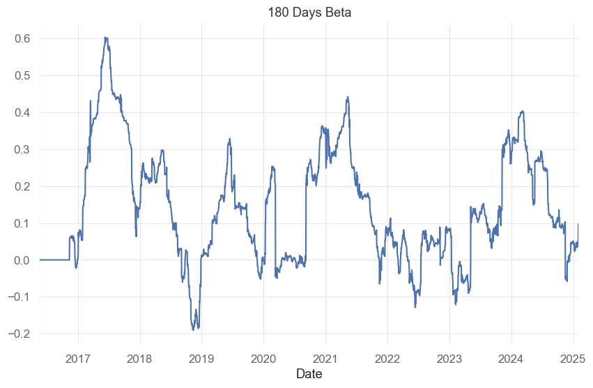
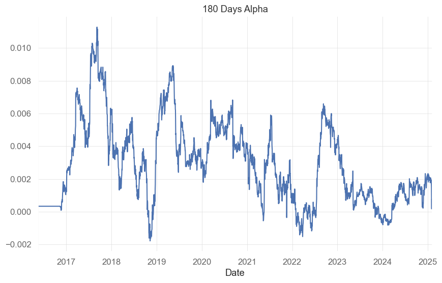
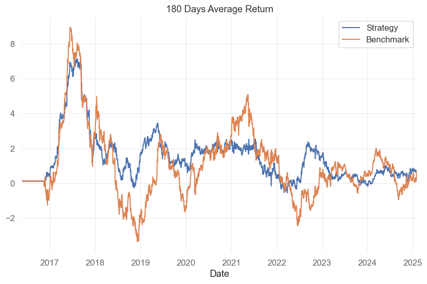

start valley end days max drawdown 99% max drawdown
142 2021-12-10 2022-03-09 2022-07-17 220 -45.662228 -44.502931
47 2018-01-10 2018-03-19 2018-04-18 99 -33.991516 -31.702138
52 2018-06-23 2018-08-10 2018-12-05 166 -33.869321 -33.664651
137 2021-05-23 2021-06-16 2021-08-08 78 -31.054742 -31.046791
183 2024-12-12 2025-02-03 2025-02-06 57 -29.802162 -29.607148
Trailing 180 days Annualized Volatility
import matplotlib.pyplot as pltroll_vol,roll_vol_bench = performance.roll_volatility(window=180)roll_vol.plot(title='90 Days Ann. Volatility',label='Strategy')roll_vol_bench.plot(label='Benchmark')plt.legend()
Trailing 180 days Sharp Ratio with zero Risk-Free Rate
roll_sr,roll_sr_bench = performance.roll_sharpe(window=180)roll_sr.plot(title='180 Days Ann. Sharpe, IR=0',label='Strategy')roll_sr_bench.plot(label='Benchmark')plt.legend()

Trailing 180 days Beta and zero Risk-Free Rate. Beta against the benchmark is calculated as rolling linear regression coefficient between the strategy and benchmark. In practical terms, the algorithm is simply the covariance of the strategy with the benchmark divided by the variance of the benchmark.
beta = performance.roll_beta(window=180)beta.plot(title='180 Days Beta',label='Strategy')

Trailing 180 days Alpha and zero Risk-Free Rate. Alpha is the excess return of the strategy over the risk-free rate. In practical terms, the algorithm is simply the mean of the strategy minus the risk-free rate minus the benchmark’s mean times the beta.
alpha = performance.roll_alpha(window=180)alpha.plot(title='180 Days Alpha',label='Strategy')

Trailing annualized 180 days Average Return. Average return is calculated as the rolling mean of the strategy multiplied by the number of data points in one year.
average_return, average_return_bench = performance.roll_average_return(window=180)average_return.plot(title='180 Days Average Return',label='Strategy')average_return_bench.plot(label='Benchmark')plt.legend()

Monthly Returns table with last column EOY values. Monthly returns are calculated by compounding daily returns.